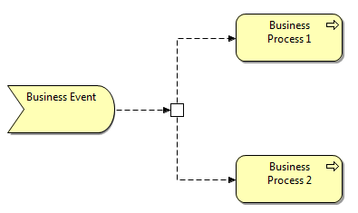

The Junction entry in the Palette
A Junction element can be added from the View's palette in the Relations palette section:
The Junction entry in the Palette
The palette entry is a three-way drop-down box, so three different types of junction can be added - "Junction", "And Junction", and "Or Junction". A Junction is used to connect dynamic relationships of the same type. A Junction is used in a number of situations to connect dynamic (triggering or flow) relationships of the same type; for example, to indicate splits or joins.
Junctions appear in the Model tree in the "Connectors" folder. They can also be added directly to the Model Tree by right-clicking on the "Connectors" folder and selecting the "New" menu item.

Example of an "Or" type Junction
 Note that Archi does not currently enforce the full ArchiMate rules when connecting junctions. You should ensure that only relationships of the same type (Flow or Triggering) are used to connect elements and junctions.
Note that Archi does not currently enforce the full ArchiMate rules when connecting junctions. You should ensure that only relationships of the same type (Flow or Triggering) are used to connect elements and junctions.